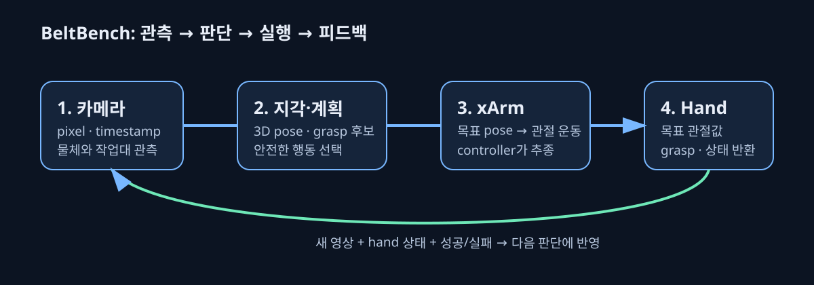

카메라·xArm·hand는 어떻게 한 번의 grasp로 이어질까?
로봇 조작은 “카메라가 보고 hand가 닫힌다”보다 조금 더 긴 피드백 고리다. 이 페이지는 각 장치가 맡는 역할과, 왜 calibration·상태 읽기·안전 중단이 모두 필요한지를 단계적으로 설명한다.

1. 카메라: pixel을 관측으로 바꾼다
카메라는 물체의 색·윤곽·깊이 단서를 pixel로 기록한다. 지각 모듈은 여러 frame에서 물체를 찾고, calibration을 사용해 “화면의 이 점”을 작업대 기준 3D 위치·방향 후보로 바꾼다. 이 단계의 실패는 물체를 못 찾거나, 찾았지만 위치를 잘못 추정하는 형태로 나타난다.
2. Planner: 가능한 grasp를 고른다
planner는 3D 물체 pose와 robot·hand geometry를 입력으로 받아 접근 방향, 손가락 배치, 충돌 없는 arm trajectory를 고른다. 여러 후보가 있어도 joint limit, table 충돌, camera 가림, 시간 예산을 통과한 후보만 실행한다. “보였다”가 곧 “잡을 수 있다”는 뜻이 아닌 이유다.
3. xArm: 끝단 pose를 관절 운동으로 바꾼다
xArm controller는 end-effector의 목표 위치·방향을 개별 관절 motor의 목표로 변환한다. inverse kinematics는 이 변환의 후보를 찾는 계산이고, trajectory generation은 관절이 너무 빠르거나 충돌하지 않게 시간에 따른 경로를 만든다. encoder feedback은 실제 각도를 읽어 servo가 목표를 추종하게 한다.
4. Inspire hand: 손가락 목표를 실제 접촉으로 바꾼다
hand에는 grasp policy가 만든 여섯 관절 목표가 전달된다. RH56 controller 내부의 servo가 motor와 encoder를 이용해 target angle을 따라간다. 하지만 물체의 마찰·형상·접촉은 영상만으로 완벽히 알 수 없다. 따라서 actual angle, 이후에는 force/error/status, 그리고 카메라 관측을 함께 읽어야 잡힘과 미끄러짐을 구분할 수 있다.
5. Feedback: 실패를 다음 행동의 입력으로 바꾼다
실행 뒤 새 camera frame과 robot/hand state를 다시 읽는다. 물체가 들리지 않았으면 같은 명령을 무한히 반복하지 않고 실패 원인을 분류한다. 예를 들어 perception error면 재관측, 접근 실패면 새 grasp 후보, hand error면 안전 중단이 맞다. 이 폐루프 구조가 BeltBench가 기록하려는 핵심이다.
안전 경계
| 확인 | 아직 할 수 없는 말 |
|---|---|
| xArm network/Studio 응답 | 모든 trajectory가 충돌 없이 안전하다 |
| hand status read 응답 | 물체를 안전하게 grasp할 수 있다 |
| camera preview | pixel이 실제 grasp pose로 정확히 변환된다 |
| calibration residual이 작음 | 모든 물체·조명·가림에서 성공한다 |
따라서 BeltBench는 연결, calibration, planning, action, evidence를 따로 기록한다. 각 gate의 결과를 남겨야 실험 실패를 “robot이 안 됐다”가 아니라 재현 가능한 원인으로 설명할 수 있다.
관련 이슈
ISSUE-001은 arm controller 연결, ISSUE-002는 camera와 calibration, ISSUE-004는 hand 통신, ISSUE-005는 좌표계 자동화를 다룬다.